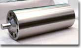
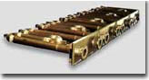

遠心鋳造法
>> 鉄鋼設備用溶融亜鉛メッキ用シンクロール >> 熱処理炉用ラジアントチューブ
金型を回転させながら溶融金属を注入し、遠心力を利用して凝固させる鋳造法で、炭素鋼から高合金まで幅広い鋼種の製造を行っています。遠心力による加圧凝固で製造された製品には組織が緻密で、砂カミなどの有害欠陥が少ないという優れた特徴があります。

耐溶融Zn腐食性に優れた材質を開発。国内および海外のユーザーから好評を得ています。 開発材は熱膨張係数が小さいマルテンサイト系ステンレスで、サーメット溶射にも適しています。また、板や丸棒の鍛造材も供給可能です。
材質：開発材 DCH23、TR834M
製法：(遠心力鋳造法＋砂型鋳造法) 溶接組立

JISやASTMの汎用材から当社開発材を含む高温用の材質を揃え、使用条件に対し最適な材質を選定し製品を供給しています。最適な溶接棒、溶接方法を採用し、溶接部の品質も確保しています。
製法：(遠心鋳造法＋砂型鋳造法) 溶接組立